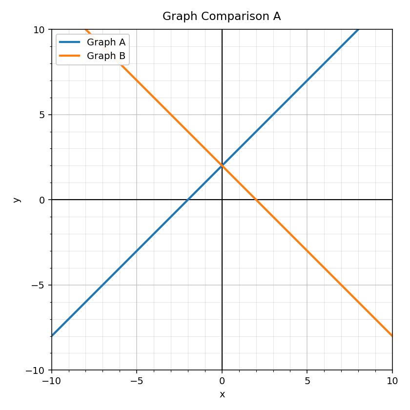
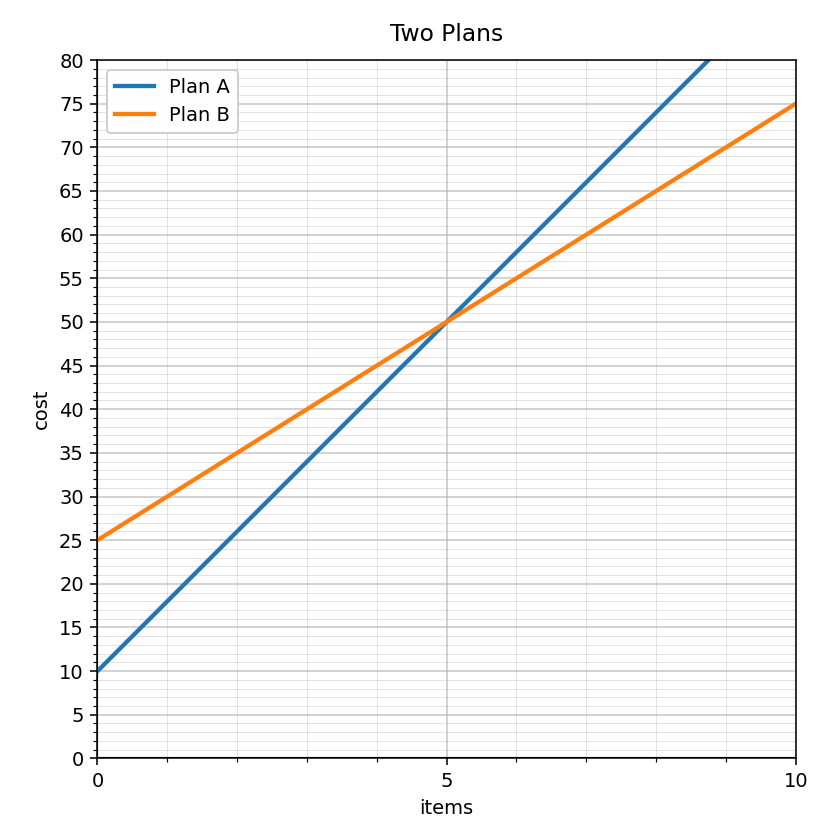

Practice Set 4.3.1
Spiral Plan and DoK Balance
Current Focus
Unit 4.3: Transformations
mostly DoK 1–2
Unit 4.3: Transformations
mostly DoK 1–2
Main Spiral
Unit 3.3: Writing and Solving Systems from Situations
4 DoK 1, 2 DoK 2, 1 DoK 3, 1 DoK 4
Unit 3.3: Writing and Solving Systems from Situations
4 DoK 1, 2 DoK 2, 1 DoK 3, 1 DoK 4
Earlier Readiness
Unit 2.3: Writing Linear Equations
mostly DoK 1–2
Unit 2.3: Writing Linear Equations
mostly DoK 1–2
Practice Set 1: This is a section-aligned spiral: 4.3 with 3.3 and 2.3. It is not a previous-section spiral.
1.
Use Graph Comparison A. Describe one transformation that connects Graph A and Graph B, and cite a visible feature.

2.
For $f(x)=x^2$, describe the transformation in $g(x)=f(x)+6$.
3.
Complete the table for $g(x)=-f(x)+4$ using the values of $f(x)$.
| $x$ | $-2$ | $0$ | $2$ |
|---|---|---|---|
| $f(x)$ | $5$ | $1$ | $5$ |
| $g(x)$ |
4.
Sort the cards into equation cards and transformation-description cards. Then choose two that match and explain why.
$g(x)=f(x)+5$
$g(x)=f(x-3)$
$g(x)=-f(x)$
$g(x)=2f(x)$
up 5
right 3
reflection over x-axis
vertical stretch by 2
5.
Write a system for Context 1: Plan A has a start fee of 9 dollars and costs 3 dollars per item. Plan B has a start fee of 21 dollars and costs 2 dollars per item.
6.
Solve this system and interpret the solution in a real-world situation: $y=5x+12$ and $y=3x+26$.
7.
Define variables and write a system: 43 tickets were sold. Adult tickets cost 13 dollars, student tickets cost 6 dollars, and total sales were 436 dollars.
8.
Use a table, equation, or graph strategy to decide when Option A and Option B have equal value in Scenario 4. Explain your method.

9.
A student gets solution $(9,35)$ for a system. Explain what each coordinate could mean in a modeled situation.
10.
Two students wrote different systems for Scenario 6. Describe the evidence needed to show both systems model the same situation.
11.
Critique this model for Scenario 7: the student used one equation for total items but forgot to use the total value. Explain what is missing.
12.
Create a system with solution $(3,28)$ in a cost context. Explain how someone could verify the solution without guessing.
13.
Write an equation for a line with slope 2 and $y$-intercept -5.
14.
Write a linear equation from Table 2.
| $x$ | $0$ | $1$ | $2$ | $3$ |
|---|---|---|---|---|
| $y$ | 4 | 7 | 10 | 13 |
15.
Use Line A in Readiness Graph 3 to write a possible equation. Explain where the slope and intercept appear.

16.
Create a context modeled by $y=6x+14$. Identify the meaning of both numbers.